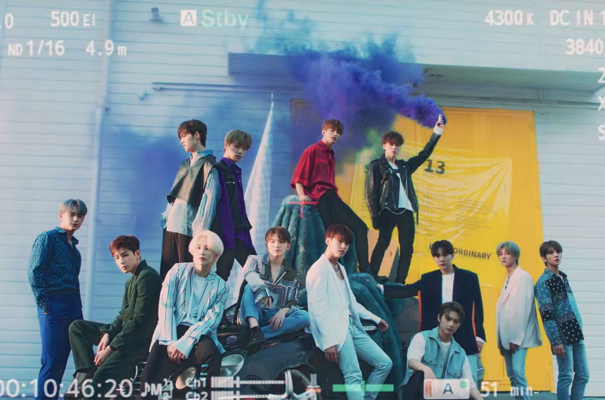

K-pop (abreviación de Korean popular music, en inglés o música popular coreana en español), es un género musical que incluye diversos estilos como la música dance electrónica, hip hop, rap, rock, R&B, etc, y que se refiere específicamente a la música popular de Corea del Sur, debido a que Corea del Norte no posee una industria de música popular con influencia occidental.
BLACKPINK
Blackpink es un grupo femenino surcoreano formado por la empresa YG Entertainment en 2016. El grupo está formado por cuatro integrantes: Jisoo, Jennie, Rosé y Lisa. Debutaron el 8 de agosto de 2016 con el EP titulado Square One, en el que aparece "Whistle", su primera canción número uno en Corea del Sur, así como "Boombayah", su primer éxito número uno en el Billboard World Digital Songs, que estableció un récord como el video musical de debut más visto por una banda coreana. Con el éxito comercial temprano del grupo, fueron aclamados como el Nuevo Artista del Año en los 31.º Golden Disc Awards y los 26.º Seoul Music Awards.
En 2018 Blackpink era el grupo femenino de K-pop con mayor puntuación en Billboard Hot 100 y Billboard 200, alcanzando el número 55 con "Ddu-Du Ddu-Du", y alcanzando el número 40 con Square Up, respectivamente. También son el primer y único grupo de chicas K-pop en ingresar y encabezar la lista de Artistas Emergentes de Billboard. También son el primer grupo femenino de K-pop que tiene cuatro sencillos número uno en la lista de ventas de canciones digitales mundiales de Billboard. En el momento de su lanzamiento, "Ddu-Du Ddu-Du" fue el video musical coreano más visto en las primeras 24 horas en YouTube, y en enero de 2019, se convirtió en el video musical más visto por un grupo de K-pop en el sitio web.
SEVENTEEN
Seventeen, también conocido como SVT, es un grupo musical surcoreano formado por Pledis Entertainment en el año 2015. El grupo consiste de 13 miembros divididos en tres sub-unidades, cada una con un área distinta de especialización: "Unidad de Hip Hop", "Unidad Vocal" y "Unidad de Performance". Seventeen ha lanzado dos álbumes de estudio y seis distintos EPs.
Seventeen es considerado un grupo "autoproductor", debido a que los miembros están involucrados activamente en la composición de sus canciones y en otros aspectos de su grupo.
BTS
BTS es una boy band surcoreana formada por Big Hit Entertainment en 2013. Está compuesta por siete integrantes: Jin, Suga, J-Hope, RM, Jimin, V y Jungkook. El grupo debutó el 13 de junio de 2013 con la canción «No More Dream», incluida en su primer sencillo 2 Cool 4 Skool, mientras que su estreno en Japón se produjo el 4 de junio de 2014 con la versión en japonés del mismo tema. El nombre de su club de fanes oficial es A.R.M.Y, acrónimo de «Adorable Representative MC for Youth».
KILL THIS LOVE
Blackpink ha conseguido con su último hit en ser el vídeo más visto de Youtube en sus primeras 24 horas. Kill This Love ha conseguido un total de 56,7 millones de reproducciones en su primer día en la plataforma, las chicas de BLACKPINK confirman su éxito a nivel mundial.

HIT
El nuevo sencillo digital HIT del grupo surcoreano, SEVENTEEN, se ha posicionado desde el pasado 5 de agosto en el primer lugar en las listas de canciones de K-pop de iTunes en 19 países, incluyendo a Estados Unidos, Australia, Canadá, España, Vietnam, Nueva Zelanda y más.

BTS WORLD
BTS World es el álbum de banda sonora para el juego móvil homónimo de Netmarble, interpretado por la boy band surcoreana BTS. Fue lanzado el 28 de junio de 2019. Cuenta con el sencillo principal «Dream Glow», una colaboración con la cantante británica Charli XCX, que se lanzó el 7 de junio de 2019.45 El segundo sencillo, «A Brand New Day» con la cantante sueca Zara Larsson, fue lanzado el 14 de junio.6 El tercer sencillo, «All Night» con el rapero americano Juice Wrld, fue lanzado el 21 de junio